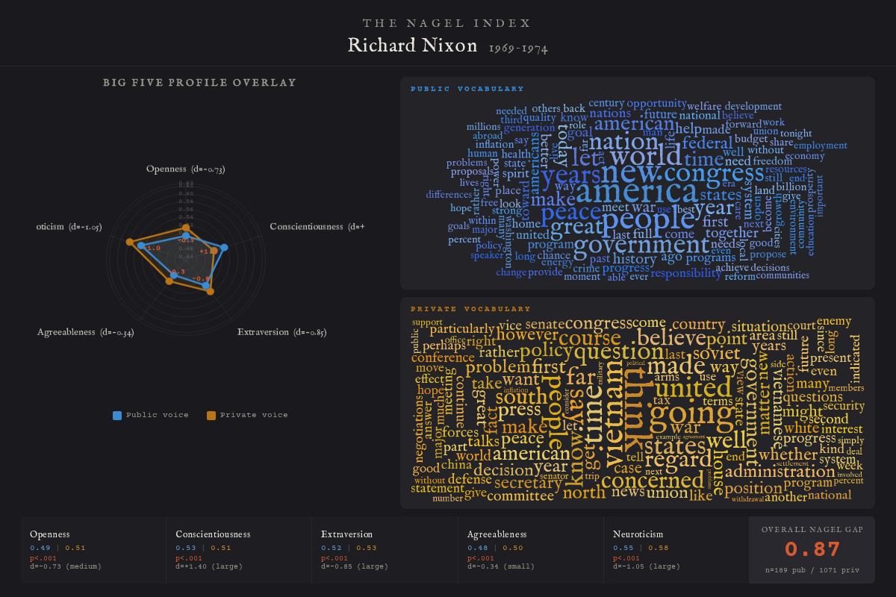
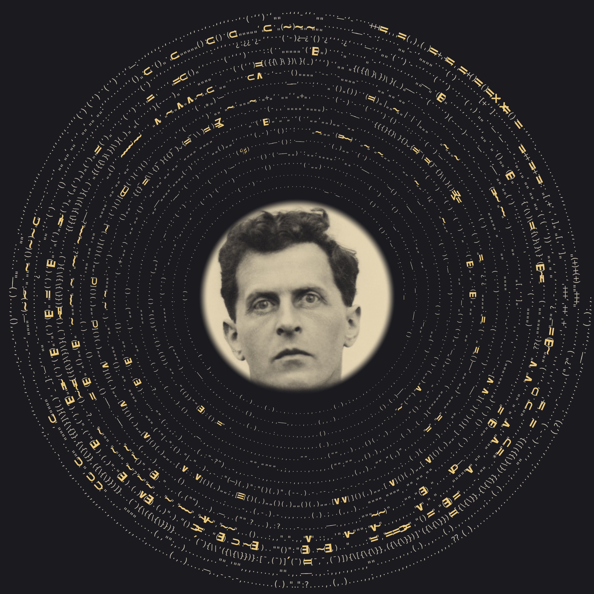
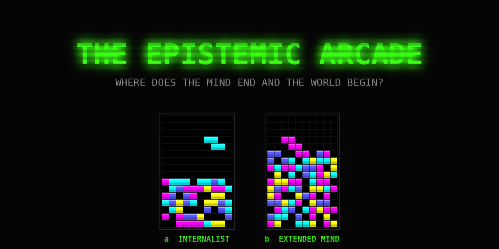

Visual essays that use data to reopen questions we thought were settled. Each piece is built around our own open-source tools — chronowords and kenon — and designed to be read, scrolled, and explored.
These are not dashboards. They are arguments made with data, written to be read from beginning to end.

Does power change a person — or reveal them? We applied Big Five personality analysis to the public speeches and private writings of seven American leaders. Lincoln was the same man in both rooms. Nixon was two different people. Kissinger knew exactly what he was doing.

A visual reading of Wittgenstein's Tractatus: 2,025 sentences as a handwritten spiral, sized by centrality and coloured by community.

Two reinforcement-learning agents learn Tetris under identical architectures but opposite reward functions — one penalised for every keystroke, one free to think with its hands. A live test of Clark & Chalmers' extended-mind hypothesis.